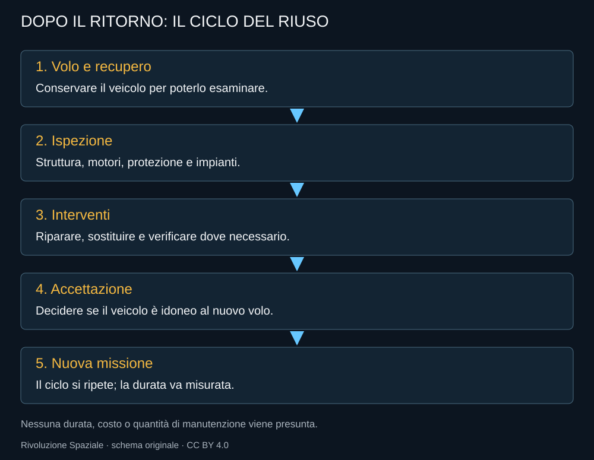

La parola riutilizzabile contiene una promessa più grande della parola recuperabile. Un veicolo può tornare e aver bisogno di molto lavoro. Può essere fatto volare una seconda volta e restare economicamente poco conveniente. Per capire Starship occorre seguire la macchina oltre l’atterraggio.
Il vantaggio non sta soltanto nel non buttare il razzo
Conservare un componente costoso evita di produrne uno identico per ogni missione. Ma il vantaggio può essere eroso da ispezioni lunghe, sostituzioni, personale e infrastrutture ferme. Il costo per volo dipende dall’intero ciclo: costruzione, utilizzo, recupero, controllo e nuova preparazione.

Che cosa va controllato
Motori e turbopompe hanno vissuto temperature, pressioni e transitori. La struttura ha ricevuto carichi; lo scudo ha attraversato un ambiente termico impegnativo; valvole e sensori devono mantenere prestazioni affidabili. Un’ispezione cerca sia danni evidenti sia cambiamenti che potrebbero causare un guasto alla missione successiva.
La nave pone problemi diversi dal booster. La protezione termica della Ship deve essere compatibile con un rientro molto energetico e con l’obiettivo di usare ancora il veicolo. Una piastrella facile da sostituire aiuta, ma migliaia di elementi da verificare possono diventare un collo di bottiglia. La semplicità del pezzo non equivale alla semplicità dell’operazione complessiva.
Il secondo volo del booster
Il Flight 9 riutilizza un Super Heavy già impiegato nel Flight 7. È un risultato concreto di riuso, non ancora una dimostrazione di molti cicli con ritorno regolare. La perdita nel profilo di rientro di quella missione non cancella il secondo volo, ma impedisce di trattarlo come il ciclo completo che si vuole raggiungere.
Questa distinzione è utile anche nel confronto con Falcon 9. Il patrimonio di esperienza sul primo stadio Falcon aiuta SpaceX, ma non qualifica automaticamente una nuova macchina. Diversi motori, geometrie, carichi e ritorni producono condizioni differenti. Il metodo può essere trasferito; le prove devono essere eseguite.
La cadenza è una misura di maturità
La capacità di preparare di nuovo un veicolo in tempi prevedibili ha un valore commerciale. Un cliente vuole sapere quando il carico partirà, quale rischio accetta e che cosa accadrà se un esemplare richiede manutenzione. Una flotta rende possibile non dipendere da un solo veicolo, ma richiede ricambi, documentazione e gestione coerente.
La rapidità totale non si misura soltanto fra due lanci. Si misura anche nella regolarità delle operazioni a terra e nella capacità di gestire un’anomalia senza bloccare tutto. Il progetto deve ridurre la manutenzione necessaria senza ridurre la qualità delle verifiche.
Ciò che resta da dimostrare
Al taglio di questa edizione, la cattura e il riutilizzo di un booster sono passaggi osservati. Il riuso completo e frequente del sistema, con navi recuperate e ripreparate, non è una capacità che questo libro dà per acquisita. L’obiettivo è più ampio dei risultati attuali.
Se Starship riuscirà a portare entrambe le parti dentro un ciclo sostenibile, cambierà il modo in cui si possono progettare missioni e fabbriche. Per valutare quel cambiamento serviranno dati di manutenzione, durata e frequenza, non soltanto una successione di immagini spettacolari.
Fonti pubbliche e tracce
- SpaceX, Starship. Pagina del costruttore: specifiche e obiettivi possono cambiare; consultazione 10 ottobre 2026.
- SpaceX, resoconto Flight 9. Resoconto del costruttore; obiettivi di prova distinti dal successo commerciale.
- SpaceX, resoconto Flight 14. Resoconto del costruttore; obiettivi di prova distinti dal successo commerciale.